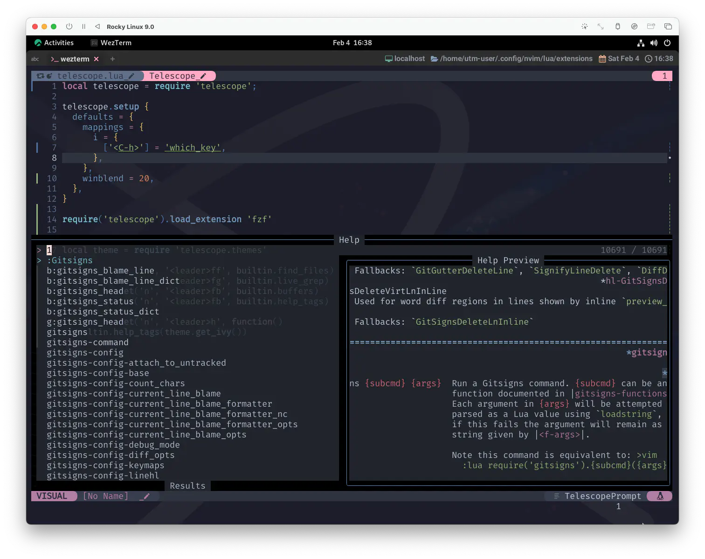
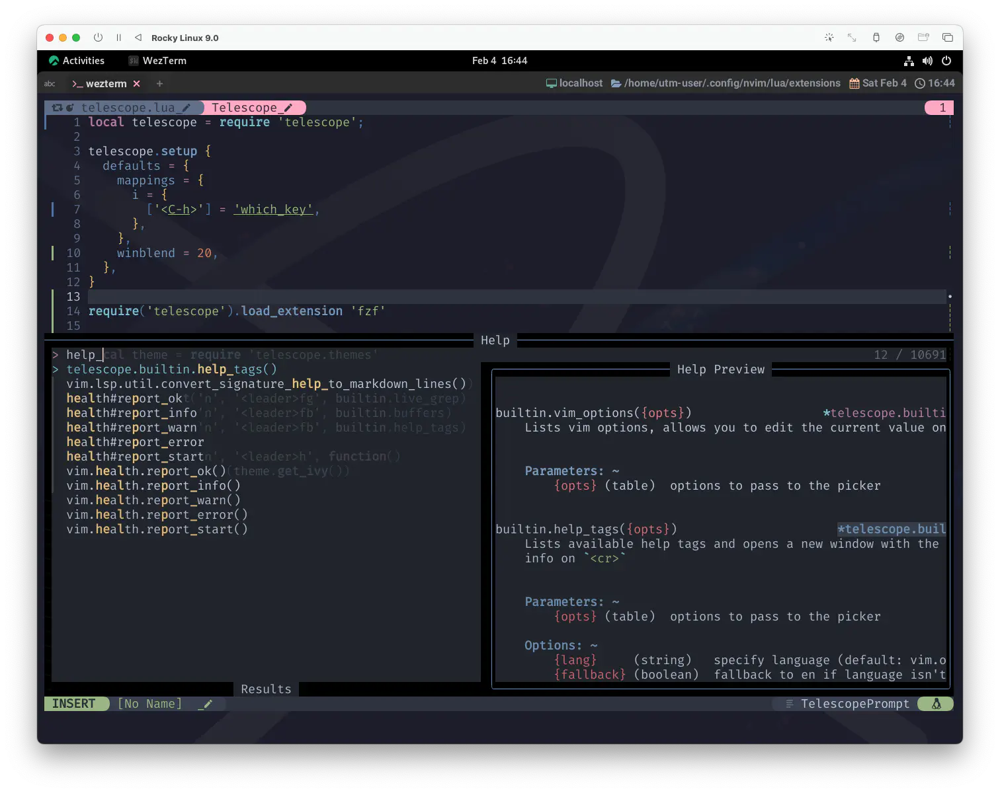
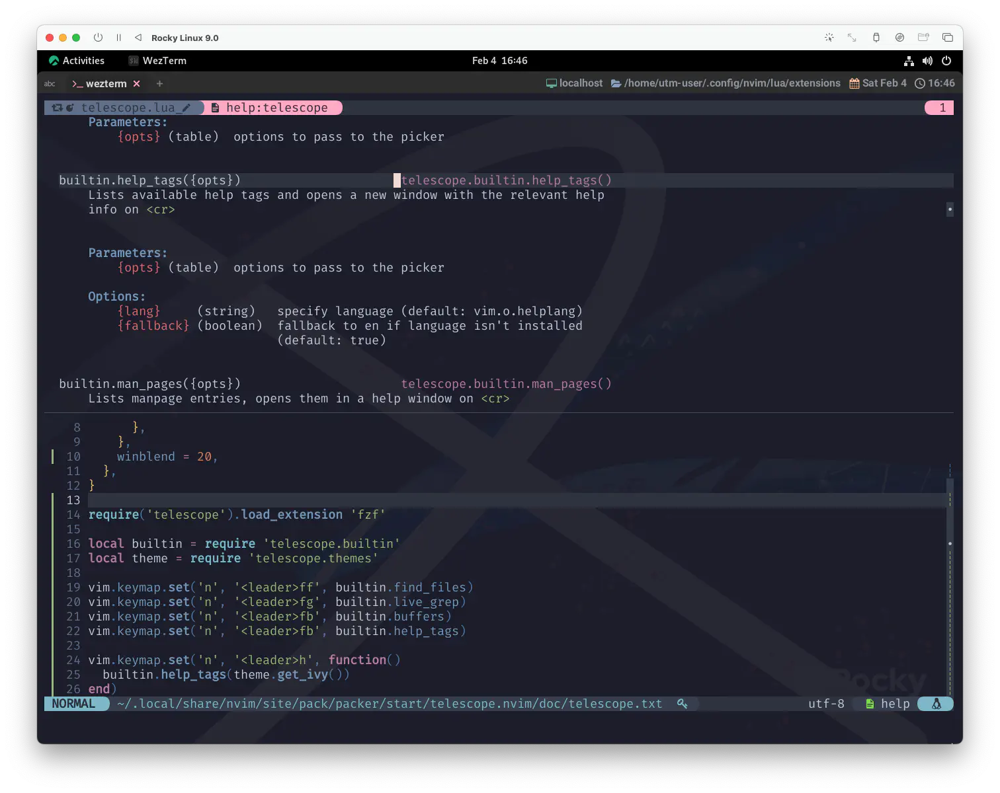
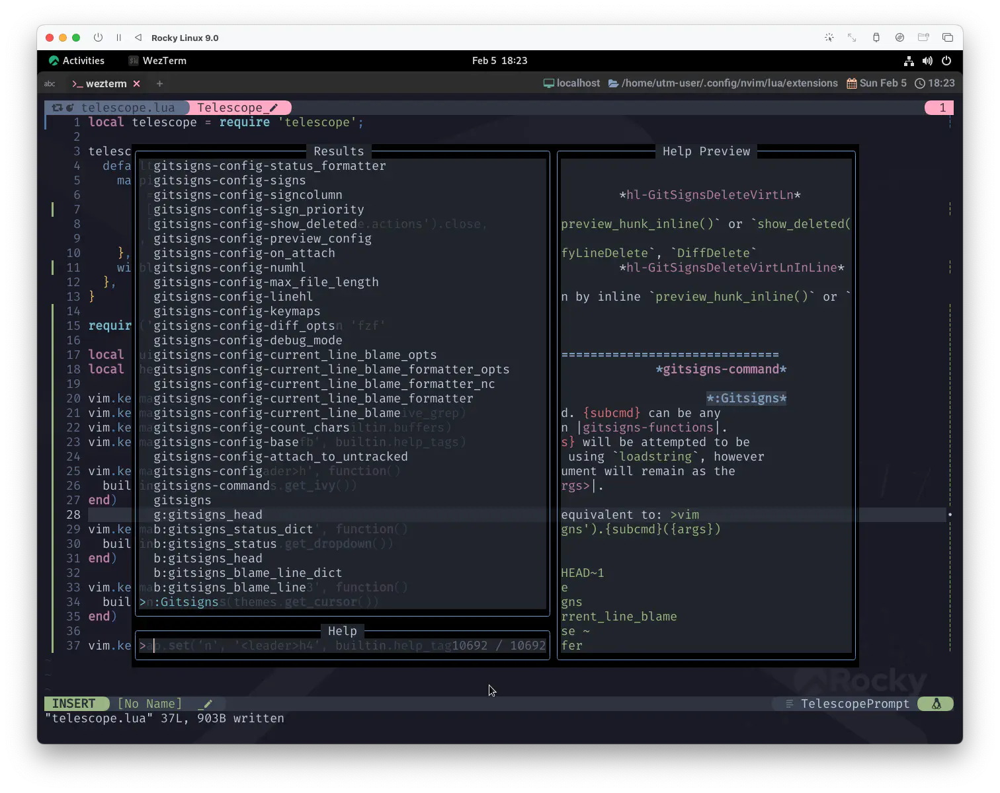
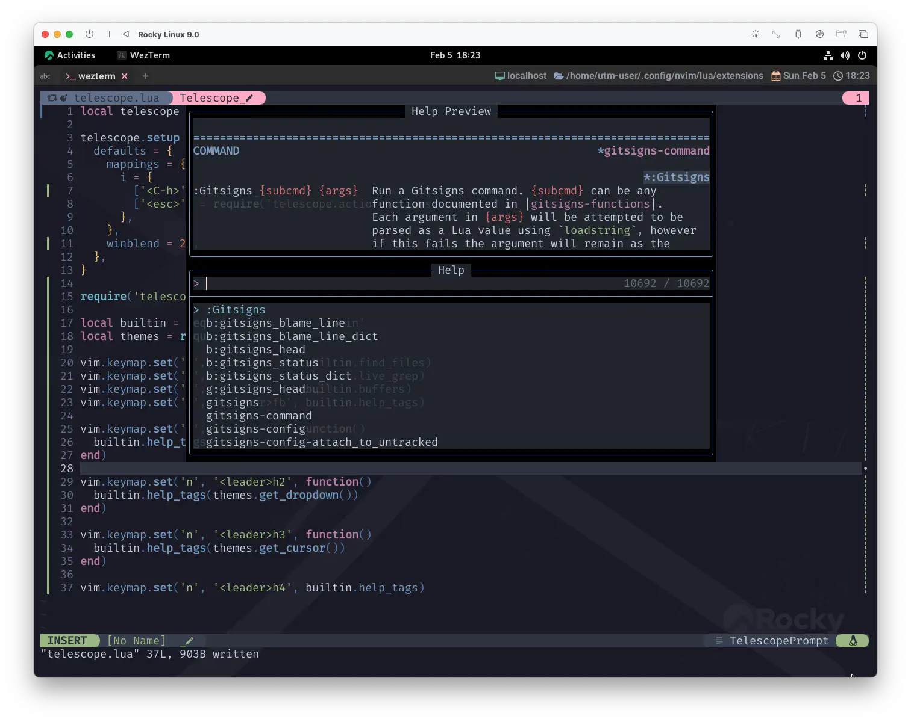
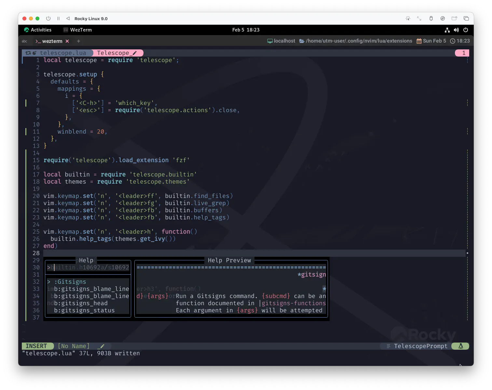

telescope.nvim - Config
前回は、ほぼ新月の時期にtelescope.nvimをメイクアップ 🌙
気づけばもうすっかり Snow Moon (満月) です🌕 ムーンプリズム・パワーがハンパないです❗
...な〜んてオープニングに時間をかけていると朝になってしまうので、早速いきましょう❗
Previous...
ページを跨いだのでもう一回載っけときます。
local telescope = require 'telescope'
telescope.setup {
defaults = {
mappings = {
i = {
['<C-h>'] = 'which_key',
},
},
winblend = 20,
},
}
telescope.load_extension 'fzf'
local builtin = require 'telescope.builtin'
vim.keymap.set('n', '<leader>ff', builtin.find_files)
vim.keymap.set('n', '<leader>fg', builtin.live_grep)
vim.keymap.set('n', '<leader>fb', builtin.buffers)
vim.keymap.set('n', '<leader>fh', builtin.help_tags)
これがtelescopeの基本形ですね。
で、いつも通りこれだけでいってもいいんですが...、
ちょ〜っち寄り道して、先にわたしのおすすめ設定を紹介しちゃいます😆
help_tags ✨My recommendation✨
こんなのを入れてみてください。
local themes = require 'telescope.themes'
-- ...
vim.keymap.set('n', '<leader>h', function()
builtin.help_tags(themes.get_ivy())
end)
そしたら、leaderhとしてみましょう。 
一目で分かるすっごいやつ...❗
文字列で絞り込んで...🧐 
returnで開く。 
デフォルトであってもおかしくない...っていうか、なんでないの⁉️ ってぐらいの機能が実現してます🤗
themesについてはまた後で触れます。おたのしみはとっときましょ😉
setup
それじゃあ、ここからはいつも通りでいきましょう🐰
defaults
このサイトでは、defaultsオプションのみを扱います。
mappings
telescope.mappings is used to configure the keybindings within a telescope
picker. These key binds are only local to the picker window and will be cleared
once you exit the picker.
telescope.mappings はテレスコープピッカー内のキーバインドを設定するために使用されます。
これらのキーバインドはピッカー ウィンドウ内でのみ有効で、ピッカーを終了するとクリアされます。
We provide multiple configuration options to make it easy for you to adjust telescope's default key bindings and create your own custom key binds.
複数の設定オプションが用意されており、telescope のデフォルトのキーバインドを調整したり、 独自のキーバインドを作成したりすることが簡単にできます。
To see many of the builtin actions that you can use as values for this table,
see telescope.actions
このテーブルの値として使用できるビルトインアクションの多くは、 telescope.actions を参照してください。
こっちも「もはや」って感じですが、iはInsert Mode、nはNormal Modeです。
それぞれにキーマッピングを設定できます。
Insert Mode
telescopeの検索バーにいる時もInsert Mode・Normal Modeっていう概念は持っていて、
telescopeを開いた段階ではInsert Modeになっています。
EscをすればNormal Modeに切り替わりますが、「え😮 Normal Mode要る❓」とか思っちゃう場合はこんなのもアリです。
mappings = {
i = {
-- ['<C-h>'] = 'which_key',
['<esc>'] = require('telescope.actions').close,
},
},
こうしておくとEscでtelescopeからそのまま抜けます☺️
which_key
telescopeウィンドウを開いた状態でCtrl-hとすると操作一覧が現れます。
actions.which_key({prompt_bufnr})
Display the keymaps of registered actions similar to which-key.nvim.
which-key.nvimと同様に、登録されたアクションのキーマップを表示します。
以下のようにコードを加えるとNormal Modeでも操作一覧を出すことができるんですね。
mappings = {
i = {
['<C-h>'] = 'which_key',
},
n = {
['<C-h>'] = 'which_key',
}
},
なんていうか、すっごい行き届いてますよね☺️
winblend
「これがtelescopeの基本形ですね〜」とか言っておきながら、winblendはわたしが勝手に入れてるやつでした🐱
'winblend' 'winbl' number (default 0)
local to window
Enables pseudo-transparency for a floating window. Valid values are in
the range of 0 for fully opaque window (disabled) to 100 for fully
transparent background. Values between 0-30 are typically most useful.
フローティングウィンドウの擬似透過を有効にする。
有効な値は、完全に不透明なウィンドウ（無効）のための 0 から完全に透明な背景のための 100 の範囲である。
一般的に 0-30 の間の値が最も有用。
UI-dependent. Works best with RGB colors. 'termguicolors'
これは UI に依存する。`termguicolors`が有効である場合に最も機能する。
winblendはNeovimのwindowオプションです。
...なので、とにかくスケスケが好きなら、options.luaあたりにこんなんするのも良いと思います。
vim.api.nvim_win_set_option(0, 'winblend', 20)
ほらね。telescopeに限らずpackerなんかも、もれなくスケスケです☺️ えへへ。
load_extension
telescope.load_extension({name})
Load an extension.
拡張機能を読み込む。
- Notes:
- Loading triggers ext setup via the config passed in `telescope.setup`
ロードすると、`telescope.setup` で渡された設定により、拡張機能のセットアップが行われます。
Parameters:
{name} (string) Name of the extension
このサイトではtelescope-fzf-native.nvimのロードに使用しています😌
fzf-native is a c port of fzf. It only covers the algorithm and implements few functions to support calculating the score. This means that the fzf syntax is supported:
fzf-native は fzf の c 版です。これはアルゴリズムのみをカバーし、スコア計算をサポートするいくつかの関数を実装しています。 これは、fzf構文がサポートされていることを意味します。
もしカスタマイズが必要であれば Telescope Setup and Configuration で方法が示されています。
builtin
これはもうtelescope.nvimがオフィシャルに機能を一覧してくれているので、これだけ示します。
Built-in functions. Ready to be bound to any key you like.
これを見るだけでもかなり多機能なのがわかります...。😮
わたしがさらっと確認した限りで言うと、
- Vim Pickers:
builtin.tagsはctagsを使っている人向け - Neovim LSP Pickers:
LSPが動いている前提
この辺り以外は、もうここまでの内容だけでも全部動くんじゃないかな🤔
一応使う方法だけ書いておくと、キーマップに登録するのが一番簡単です。例えば、
| Functions | Description |
|---|---|
| builtin.find_files | Lists files in your current working directory, respects .gitignore |
...ってなってるのを、
vim.keymap.set('n', '<leader>ff', builtin.find_files)
...ってしていくだけですね。全部このフォーマットでいけるはずです❗
themes
...ってことで、ようやくthemesに辿り着きました☺️
これはさっきのhelp_tagsのコードです。
local themes = require 'telescope.themes'
vim.keymap.set('n', '<leader>h', function()
builtin.help_tags(themes.get_ivy())
end)
Common groups of settings can be set up to allow for themes. We have some built in themes but are looking for more cool options.
共通の設定グループを設定することで、テーマを設定することができます。 我々はいくつかのビルトインテーマを持っていますが、よりクールなオプションを探しています。
これはもうイメージで見たほうが早いと思うので、help_tagsをそれぞれのthemesで呼んでみます。
| Themes | Image |
|---|---|
| (not param) |  |
| get_dropdown |  |
| get_cursor |  |
| get_ivy |
もう言葉なんて入りませんね❗
Recipes
このサイトで紹介した内容も含めて、
お役立ち Tips はもう既にtelescope.nvimのwikiにたくさんまとまっているので、試してみると面白いです😆
A place for the community to share configurations and custom pickers that dont fit into core or an extension
コアやエクステンションにない設定やカスタムピッカーをコミュニティで共有する場です。
Wrap Up
このサイトに書いてあることなんて、ほんと表面だけです。
telescope.nvimは、ほんとにもう目が回る😵💫 ぐらい多機能なんで❗
...で、なんですけど😮
わたしもつい最近知った便利なtipがあるので、次回はそんな新星のおはなしです✨
Fly me to the moon
And let me play among the stars
ねえ わたしを月までいかせて
あの星たちに囲まれて 遊んでみたいの
Let me see what spring is like
On jupiter and mars
ねえ 木星と火星の春って
どんなものなんだろう 見てみたいの